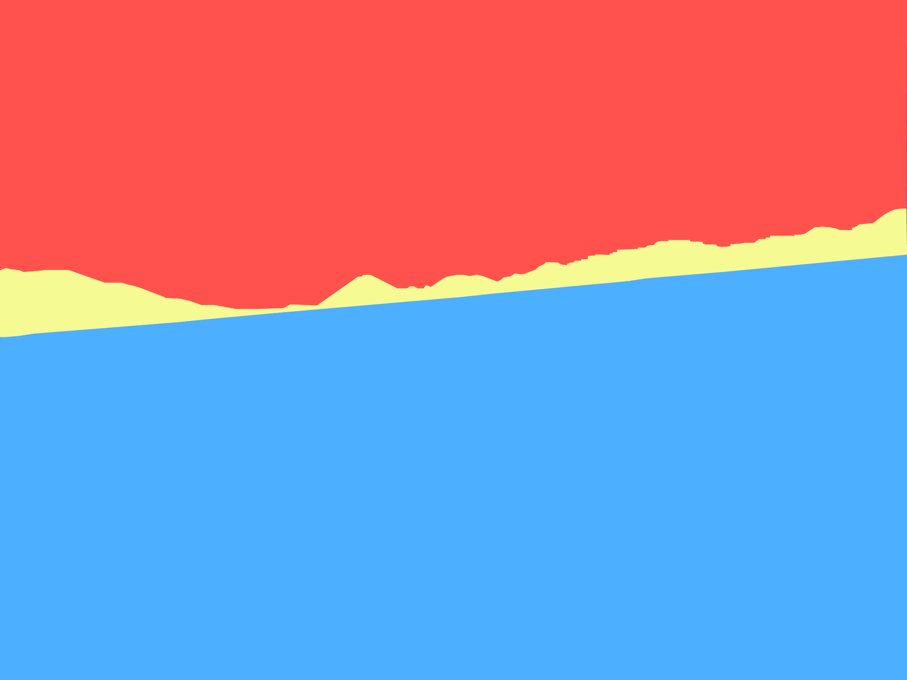

Before
After
| Original | Illustrated |
|---|---|
|
Before |
 After |
I picked this environment because I felt like it was the best in showing easily what the foreground, middleground and background is. I also picked this environment because I took this in Peru and it's not everyday you see such a place. As for the colors I chose I felt like the yellow was softer in comparison to the blue and red which is why I chose that color to represent the middleground, then I used the red for the background, and the blue for the foreground. In order to separate them into foreground, middleground, and background, I used the pen tool and I think it worked out pretty well. It was quite easy to use the pen tool with this environment because really the only hard part was the middleground which had the bumpy mountains.